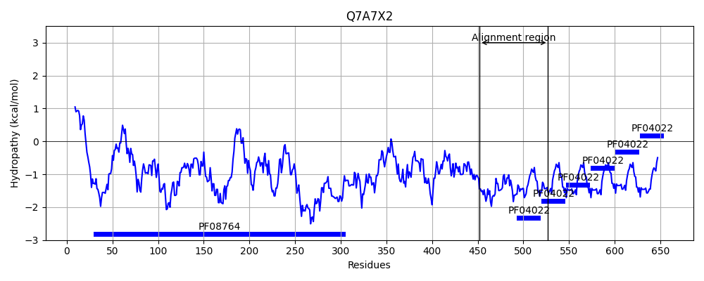

YP_499658.1
Hit Accession: Q7A7X2
Hit TCID: 3.A.1.122.4
Hit Description: gnl|BL_ORD_ID|15378 gnl|TC-DB|Q7A7X2|3.A.1.122.4 Staphylocoagulase OS=Staphylococcus aureus (strain N315) GN=coa PE=4 SV=1
Mach Len: 81
e:0.000000
Query TMS Count : 1
Hit TMS Count: 0
TMS-Overlap Score: 0.000000
Predicted Substrates:CHEBI:5651;ferroheme b
BLAST Alignment:
| Protein Hydropathy Plots: | |
|---|---|
 |  |
Pairwise Alignment-Hydropathy Plot: | |
 | |